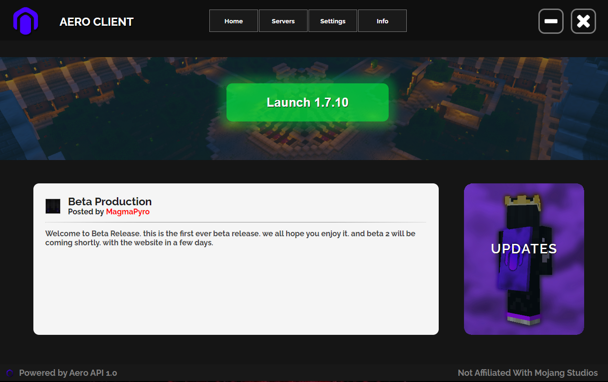

Aero Client's launcher is fully custom and designed to be easy to navigate with tips on how to use it's features.
Launching with Aero Client extremely quick and secure, meaning the client launches faster than any other client in some cases.
The launcher automatically updates the client, and many bug fixes are released each day.
Aero Client is updated daily, and bugs are usually fixed within a few minutes of them being reported.
~ Aero Client Management